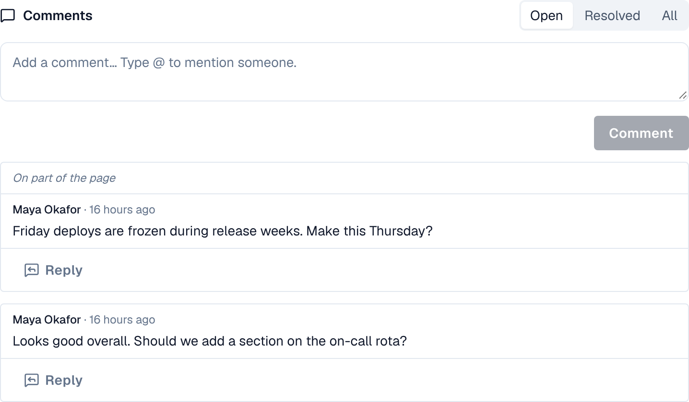

1. Overview
People signed in who can read a page see its comments under it. Anyone with the space's Commenter, Editor or Admin role can comment and reply; Viewers read them.

2. Comment and reply
- Open the page and go to Comments, under its text.
- Write in Add a comment…. Type @ to mention someone.
- Select Comment. The people watching the page are told.
- Write in Add a comment… under the page and select Comment.
- Reply answers a thread. Replies go one level deep, up to 50 per thread.
- Type @ to mention someone (when you may see people in the space): they get an alert. Mentions reach only people the space allows.
- A comment is plain text, up to 5,000 characters.
3. Comment on part of a page
People who edit the page can comment on text in the editor: select the text, then use the comment button in the toolbar. The thread shows the text it is about (On part of the page), and Show in the page finds it. If that text is later removed, the thread says so and stays.
4. Resolve, edit and delete
| Action | Who |
|---|---|
| Resolve and Reopen a thread | The person who started it, and anyone who can edit pages in the space |
| Edit comment | The person who wrote it |
| Delete | The person who wrote it, and the space's admins. Deleting a thread's first comment deletes its replies. |
Show comments switches between Open, Resolved and All threads.
5. Alerts
A new comment tells the people it mentions, and otherwise the earlier people in the thread and the page's watchers, each once and never the writer. Editing a comment tells only people newly mentioned in it. See Alerts.